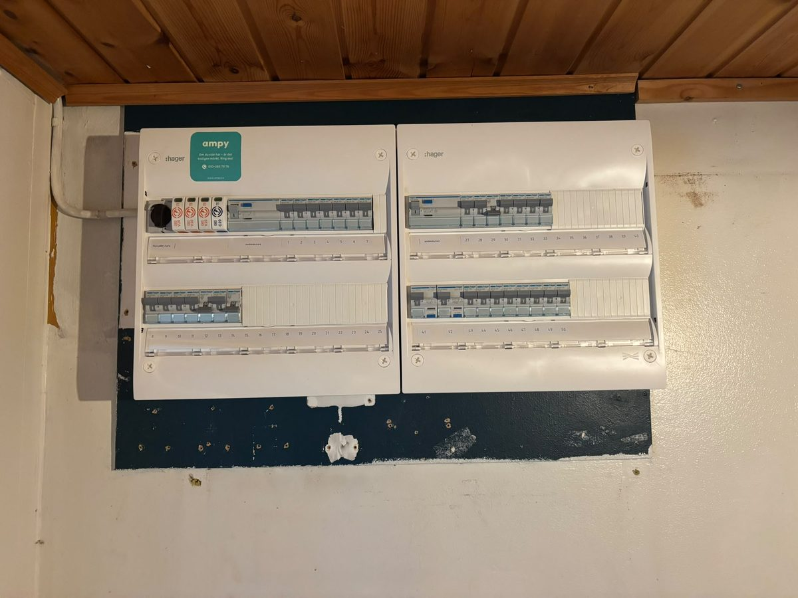
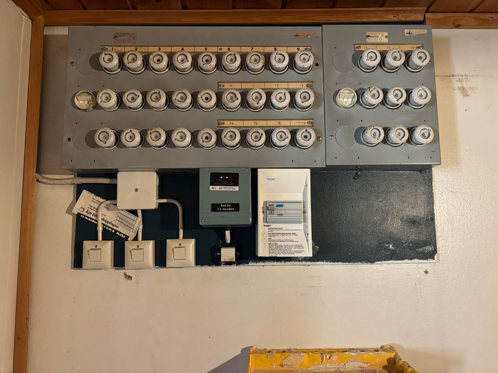
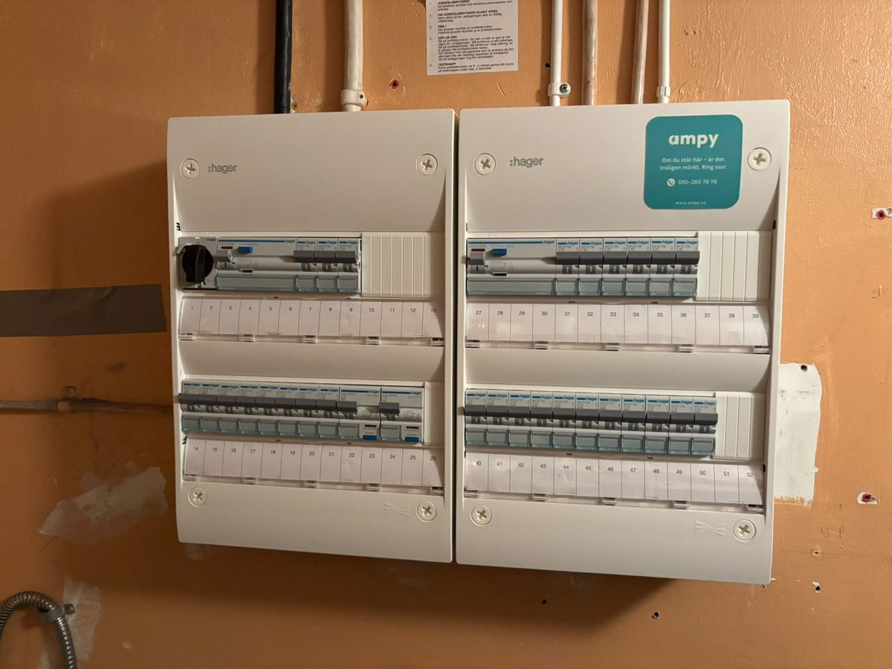
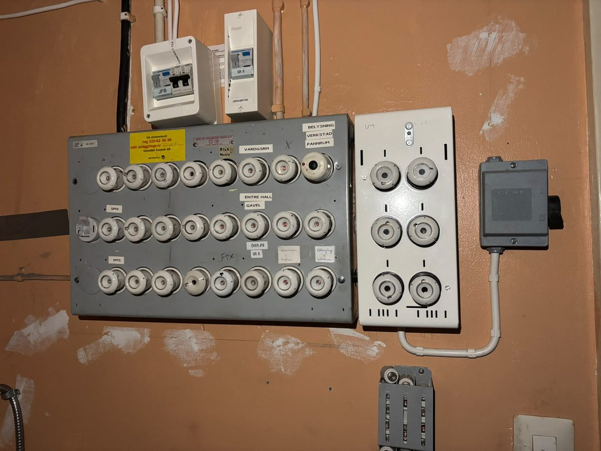

Förhandsgranskning. Riktiga foton från Ampys egna jobb, levererade av ägaren 2026-09-17. Inte ännu signerade i bevismapp — det är grinden före publicering.


FöreDra reglaget för att jämföra före och efter. Du kan också trycka var som helst i bilden, eller använda piltangenterna.


FöreDra reglaget för att jämföra före och efter. Du kan också trycka var som helst i bilden, eller använda piltangenterna.
Ny elcentral, jordfelsbrytare och märkta grupper. Samma jobb oavsett hur det såg ut innan.